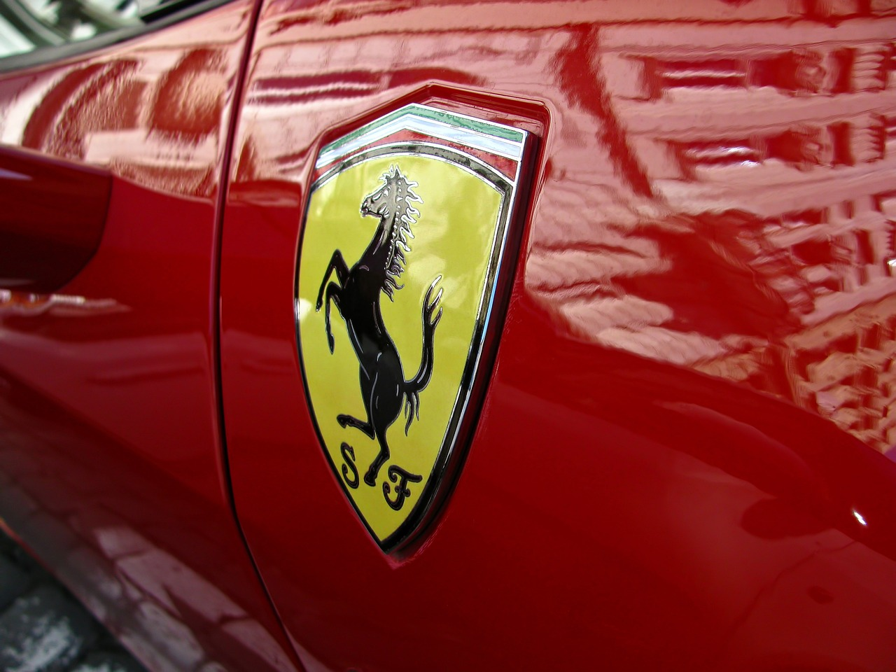

Samochody
Ferrari
Logo producenta pochodzi z emblematu, jaki miał na swoim samolocie włoski pilot z czasów I wojny światowej, Francesco Baracca. Enzo Ferrari, będąc pod wrażeniem jego umiejętności, użył tego samego symbolu – czarnego rumaka, stojącego na dwóch tylnych nogach. Taki koń jest uważany we Włoszech za symbol szczęścia.